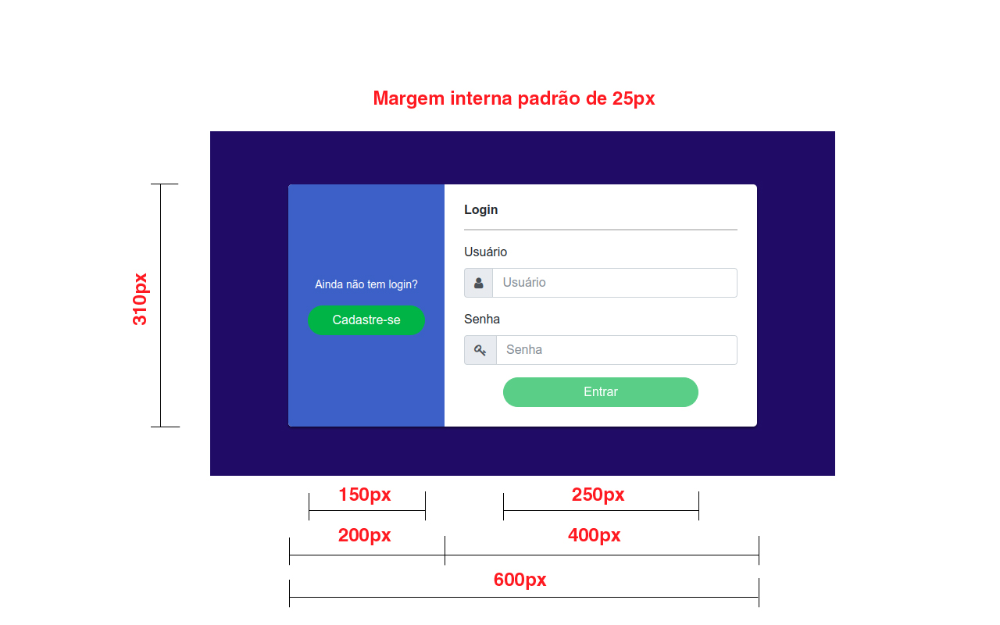

Finalmente chegou o grande dia! É hora de mostrar sua habilidade e tudo que você aprendeu nas últimas semanas. Lembrando que você deve optar entre desenvolver usando Angular ou JQuery para o código Javascript e para HTML e CSS você deve usar Bootstrap 4 mesmo. O nosso desafio é desenvolver um sistema básico de login e cadastro de usuário consumindo uma API externa.
Dito isto, então é hora de codar!
Instalar dependências de projeto:
npm install
Dependências instaladas, vamos entender a estrutura inicial. Você vai encontrar alguns arquivos já criados e trabalhar a partir daí. A ideia aqui é exercitar um pouco de TDD (Test Driven Development). A primeira coisa que você precisa fazer é rodar na sua linha de comando o seguinte:
Projeto Angular
npm start
Projeto JQuery
npm run-script start-local
E com o seu servidor aberto rode:
npm test
Para saber mais sobre testes de aceitação, leia sobre o framework Mocha. O primeiro teste irá passar e os demais irão falhar. Para terminar este teste o seu objetivo é fazer todos os testes passarem.
Nossa plataforma de cadastro/login será construida em cima de uma API que nós estamos disponibilizando para vocês, mas fiquem atentos aos verbos e restrições de cada campo.
A pasta readme-images contém as imagens de todas as telas para facilitar o entendimento detalhado de como construir cada tela em cada estado.
Vamos programar? Calma lá! Primeiro devemos definir o que vamos utilizar: Angular ou jQuery? Caso a escolha seja Angular a nossa estrutura de pastas é a padrão de um projeto angular, faremos todas as alterações dentro da pasta src/ e poderemos também utilizar o angular-cli para gerar nossos modules, services e classes - e lembre-se de importar o Componente criado no router-module para gerar as rotas. Mas se você preferir fazer nosso desafio com jQuery é só abrir a pasta public/ e seguir a estrutura de arquivos que se encontra lá, arquivos css dentro de public/css/ e arquivos js dentro de public/js/, neste projeto não é necessário configurar rotas e não é permitido alterar o nome das pastas (login e signup).
Nesta dela deveremos criar um form com dois inputs e um button que consome a API de login ara exibir um modal com nosso usuário caso ele exista no banco.

Nesta dela deveremos criar um form com seis inputs (1 text, 1 email, 1 password, 2 selects e 1 checkbox) e um button que consome a API para exibir um modal com nosso usuário caso ele seja criado com sucesso. Além disso, é importante ressaltar que nossos selects também serão alimentados pela nossa API.
[POST] http://api.avanade.gama.academy/users
Cria usuário no banco de dados e retorna objeto de usuário com todos os dados
Campos:
- username - string - (required, minlength: 3, maxlength: 16, pattern: [a-z0-9_-]*)
- email - string -(required, pattern: [a-z0-9][a-z0-9._%+-]*@[a-z0-9][a-z0-9.-]*\.[a-z]{2,20})
- password - string -(required)
- state - string - (required)
- city - string - (required)
- accepts_newsletters - boolean
[POST] http://api.avanade.gama.academy/login
Verifica se usuario e senha existem no banco de dados e retorna o objeto do usuário com todos os dados
Campos:
- username - string - (required, minlength: 3, maxlength: 16, pattern: [a-z0-9_-]*)
- email - string -(required, pattern: [a-z0-9][a-z0-9._%+-]*@[a-z0-9][a-z0-9.-]*\.[a-z]{2,20})
[GET] http://api.avanade.gama.academy/states
Retorna array com sigla de todos os estados (utilizar no select de estado)
[GET] http://api.avanade.gama.academy/cities/[:sigla_estado]
Retorna array com nome de todos as cidades para o estado escolhido (utilizar no select de cidades)
Esta prova executa um total de 10 testes de aceitação, sendo que 4 deles são de layout e o resto de comportamento do sistema.
focusout (no angular seria a propriedade touched)usernameemailstatecityaccepts_newsletterssmall com as classes form-text e text-danger após o input com erro (<small class="form-text text-danger">Campo inválido</small>)/login (também é /) e /signup. Não é permitido alterá-lasBateu aquela insegurança? Fica tranquilo que todos os links abaixo vão te auxiliar na realização da prova. A documentação é sempre a melhor companhia para o programador!! Consultem:
Ta confuso com alguma coisa? Achou as instruções muito superficiais? Entre em contato pelo chat em http://avanade.gama.academy que responderemos rapidinho!